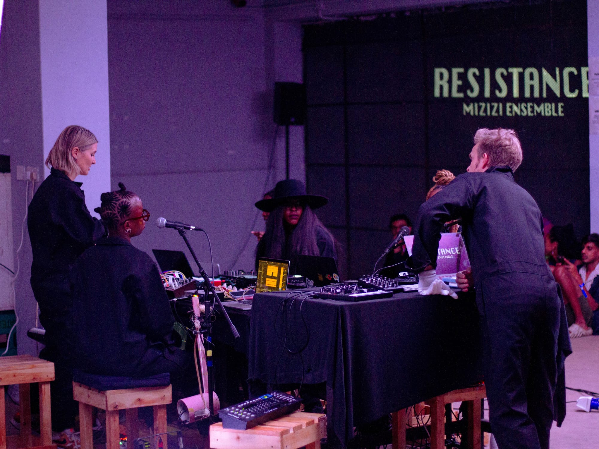

Sound → Live
Mizizi Ensemble

Mizizi (meaning “roots” in swahili) Ensemble is an interdisciplinary artist collective transforming sounds, movement, visuals and technology into visceral, site-driven performances. Drawing on a wide artistic vocabulary – from contemporary dance and club music to bespoke instrument design, live-coding, classical music, film scoring and traditional Kenyan music – they’ve established a practice built on trust, curiosity and freedom to experiment without fear of failure. Their work emerges from collaborative processes where individual voices collide and get amplified through the collective, absorbing both the political and cultural charge and physical properties of the performance space.
- RoleRecording Engineer — live performance
- DateFebruary 2025